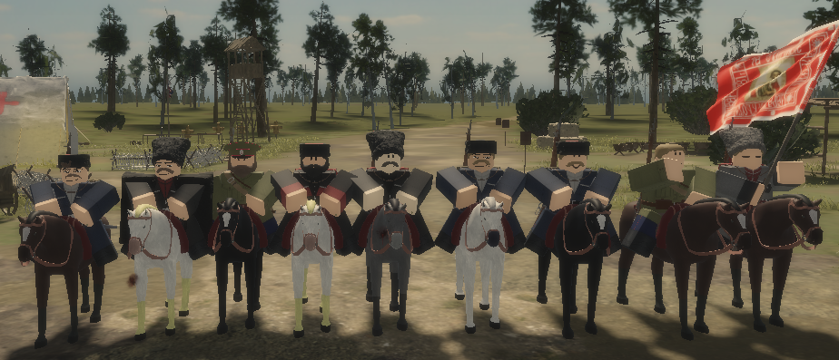

(включится музыкальное сопровождение)
Про нас: Полк сформирован царём Петром 1 в 1690 году из потешных села Преображенского, от которого и получил своё наименование, старшинство установлено с 1683 года. В 1692 году полковником (полковым командиром) Преображенского полка назначен Ю. фон Мендег, при этом А. М. Голивин стал генерал-майором и объединил командование всеми «потешными»(то есть ещё и Семеновским полком), так был сформирован Лейб-Гвардии Полк.

Перейти по ссылкам ниже:
Roblox Группа Донской Армии (кликабельно) Roblox Группа ВСЮР (кликабельно) Наш Discord Донская Армия (кликабельно)Далее мы заполняем анкету, пример:
По вопросам писать тем, кто вас пригласил
